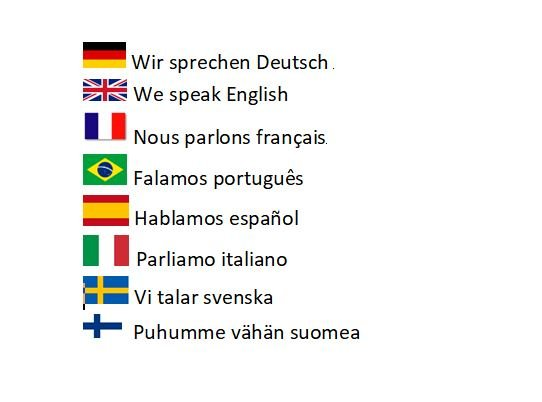
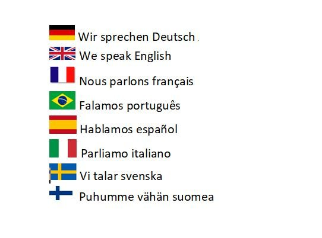
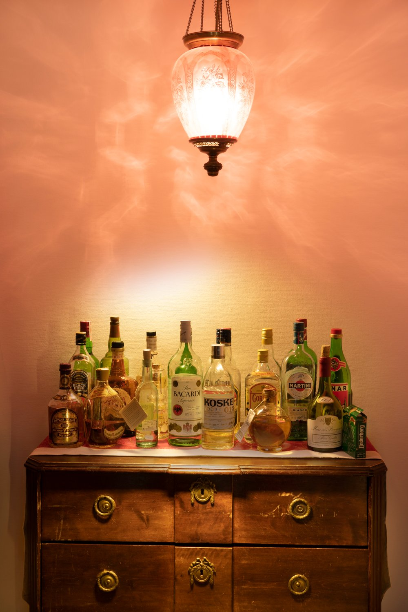
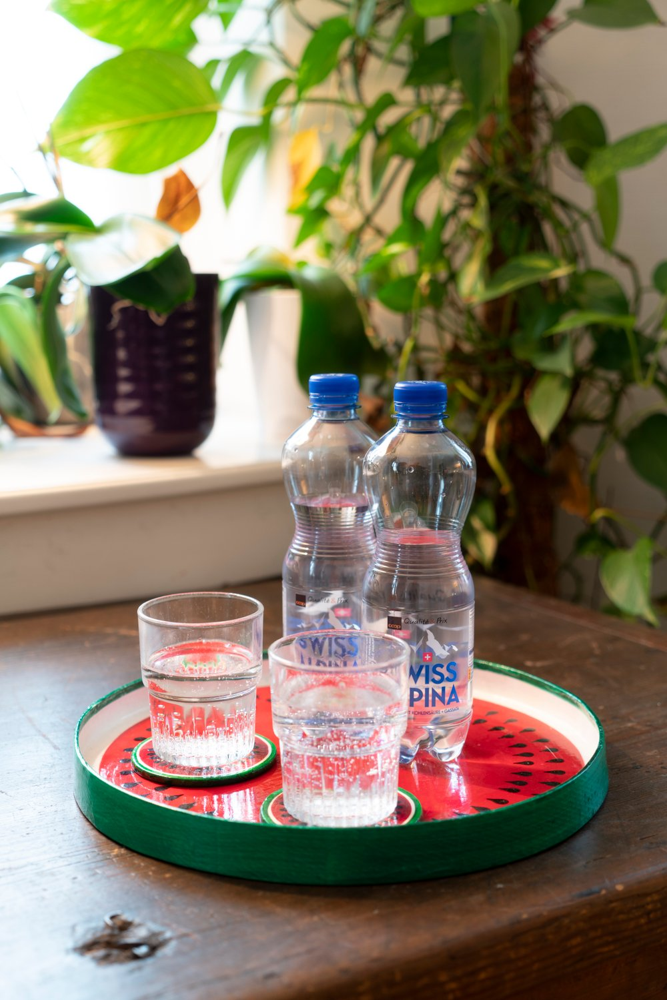
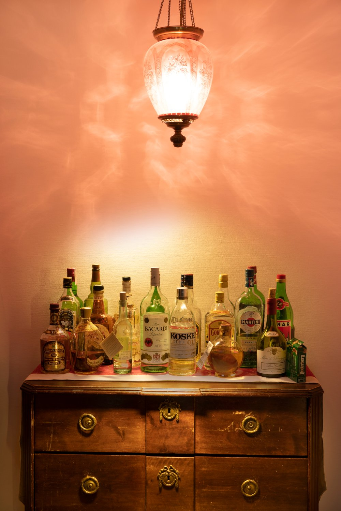
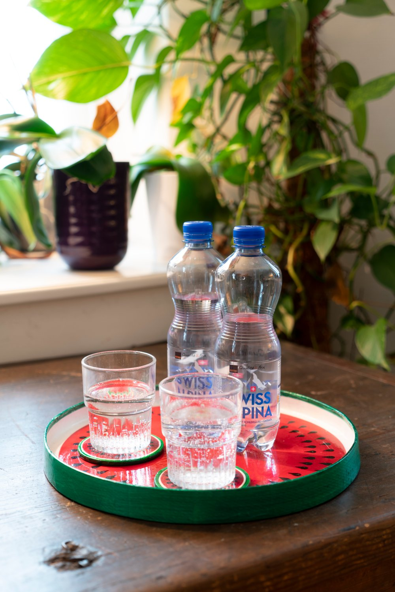

Geschichte des Hauses
Das Bed & Breakfast Tulipan befindet sich in einem liebevoll erhaltenen, denkmalgeschützten Gebäude aus dem Jahr 1877. Entworfen vom bekannten Architekten Steinauser, vereint das Haus bis heute den Charme seiner ursprünglichen Bauzeit mit dem Komfort der Gegenwart.
Über die Jahrzehnte hinweg diente das Haus unterschiedlichen Bewohnern und Familien als Zuhause - jede Generation hat ihre Spuren hinterlassen. Viele der originalen Elemente wie Holzarbeiten, Türen, Treppen und Raumstrukturen sind bis heute erhalten. Sie erzählen Geschichten von damals und verleihen dem Haus eine einzigartige Atmosphäre, die man sofort spürt, sobald man eintritt.
Der Tulipan ist mehr als nur eine Unterkunft - es ist ein Stück Einsiedler Geschichte. Ein Ort, der Tradition bewahrt, gleichzeitig aber offen und einladend ist. Wer hier übernachtet, erlebt ein Haus mit Charakter, Seele und einer warmen Gastfreundschaft, die tief verwurzelt ist.
 

 


